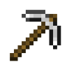

🧰
红石的小站
🎨

MC 工具耐久
材质耐久、还能用几次、几个材料能修满
工具
材质
木质
石质
铁质
金质
钻石
下界合金
类型
镐
斧
锹
剑
锄
当前耐久
耐久附魔等级
无
耐久 I
耐久 II
耐久 III
剩余
—
最大耐久
—
还能用多久
还能挖 / 砍
—
个方块
附魔后等效
—
含耐久附魔的期望
修满要材料
—
个
材料修复
手里有几个修复材料
材料
修完耐久
—
恢复到
—
各材质对照
材质
耐久
单位材料修复
💡 每种材质、每种工具（镐斧锹剑锄）共用同一个耐久值，每挖 1 个方块或攻击 1 次消耗 1 点。 用
材料
在合成格里修，每个材料回复最大耐久的 25%，且不会超过上限。
耐久
附魔每级让「不消耗」的概率变成 1/(等级+1)，也就是 I/II/III 分别等效 2/3/4 倍。 数字取自原版 Java 的物品属性，金质只有 32 点，所以金工具不要拿去挖矿。